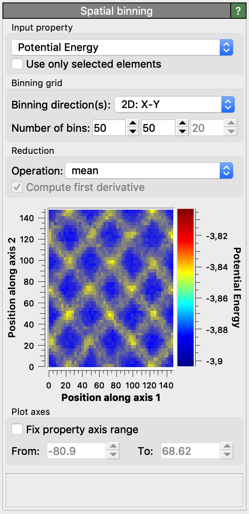

Spatial binning pro
{kind=link}

This modifier generates a 1-, 2- or 3-dimensional grid covering the simulation domain and assigns each particle into one of the uniformly sized bins. It then performs a reduction operation for a selected particle property, mapping the values of all particles contained in a cell to a single output value. This modifier can thus be used to project the per-particle data to a structured grid, for example to coarse-grain the atomistic data and generate a continuous field representation of a particle property. You can choose between different reduction operations, e.g. sum, average (mean), minimum or maximum.
The bin grid can be one-, two- or three-dimensional, i.e. the simulation domain can be subdivided into equally sized bins along one, two or all three of its axes. The spatial bins are always aligned parallel to the simulation cell edges.
Data output options
When mapping the particle values to a one-dimensional bin grid using this modifier, you can subsequently access the computed data table in the data inspector. From here you can export the bin values to a text file.
When mapping the particle values to a three-dimensional voxel grid using this modifier, you can subsequently employ the Create isosurface modifier to render isosurfaces of the computed field.
When creating two- or three-dimensional grids, you can also export the computed grid data to a text file using OVITO’s file export function. Select VTK Voxel Grid as output format.
Parameters
- Input property
The source particle property the reduction operation should be applied to. Select <None> to take uniform 1 as input value for all particles, which can be useful for counting the number of particles in each bin (reduction operation: sum) or calculating the number of density of particles (reduction operation: sum divided by bin volume).
- Use only selected elements
Restricts the calculation to the subset of particles that are currently selected.
- Binning direction(s)
This option selects the axes of the simulation cell along which the bins are created. It determines the dimensionality of the generated grid.
- Number of bins
Number of bins in each of the active binning directions.
- Reduction operation
The type of reduction operation to be carried out. Available are sum, mean, min, and max. There is an additional option sum divided by bin volume, which sums over all particles of a bin and then divides the result by the volume of the bin. This operation is useful for computing pressure (or stress) within bins from the per-atom virial.
- Compute first derivative
Numerically calculates the first derivative of the binned data using a finite differences approximation. This works only for one-dimensional bin grids. (It is useful to e.g. compute the derivative of a flow velocity profile to obtain the local shear rate.)
- Fix property axis range
If selected, the plotted property range (or color scale for 2D grids) will be set to the values given in the From and To fields. Otherwise, the minimum and maximum data values will be used to automatically adjust the plotting range.
See also
ovito.modifiers.SpatialBinningModifier (Python API)